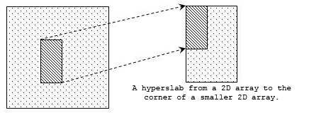
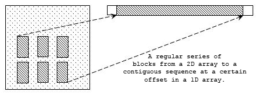
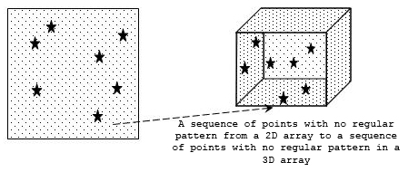
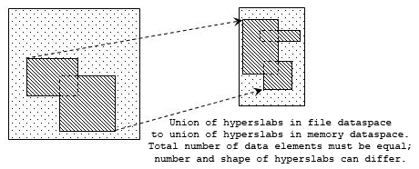
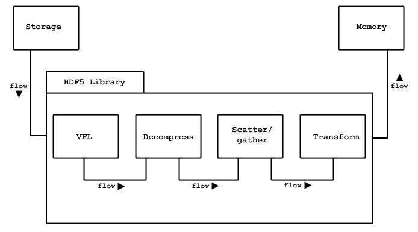

The HDF5 Library implements the HDF5 abstract data model and storage model as described in the preceding chapter, “The HDF5 Data Model”. The library exports a set of application programming interfaces, APIs, as its external interface. These APIs perform several categories of operations, as listed in Table 1, "The HDF APIs."
Two major objectives of the HDF5 products are to provide tools that can be used on as many computational platforms as possible, i.e., portability, and to provide a reasonably object oriented data model and programming interface. These objectives are somewhat in conflict as cross-platform portability is still a weak point with true object oriented programming languages. [ [ [ Explain? E.g., Java is portable, but there are many platforms on which it does not run. ] ] ]
To be as portable as possible, the HDF5 Library is implemented in portable C. C is not an object-oriented language, but the library uses several mechanisms and conventions to implement an object model.
| Table 1. The HDF5 API naming scheme |
|
|
Prefix |
Operates on |
| H5A |
Attributes |
| H5D |
Datasets |
| H5E |
Error reports |
| H5F |
Files |
| H5G |
Groups |
| H5I |
Identifiers |
| H5P |
Property lists |
| H5R |
References |
| H5S |
Dataspaces |
| H5T |
Datatypes |
| H5Z |
Filters |
Similarly, object-oriented languages collect all the methods for
an object in a single name space, e.g., the methods of a C++ Class.
The C language does not have any such mechanism,
but the HDF5 Library API simulates this through its scheme of API names
by giving names that begin with a common prefix
to operations on a particular class of objects.
Table 1 lists the HDF5 objects and the standard prefixes
used by the corresponding HDF5 APIs.
For example, functions that operate on datatype objects all have names
beginning with H5T.
[ [ [
The following is based on text from the old "Intro to HDF5"
and presumably needs some technical verification.
] ] ]2. The HDF5 Programming Model
In this section we introduce the HDF5
programming model by means of
a series of short code samples illustrating a broad selection of
common HDF5 tasks. These are merely illustrative examples;
full details are provided in the following chapters and in
the
HDF5 Reference Manual
2.1 Creating an HDF5 file
Before an HDF5 file can be used or referred to in any matter, must be explicitly created or opened. When using the default property lists, as we will for now, this is a simple matter. When the need for access to a file ends, the file must be closed. Figure 1 provides a C code fragment illustrating these steps.
If there is a possibility that a file of the declared name
already exists and you wish to open a new file regardless of that
possibility, the flag H5ACC_TRUNC will cause the
operation to overwrite the previous file. If the operation should
fail in such a circumstance, use the flag H5ACC_EXCL
instead.
|
| Figure 1. Creating and closing an HDF5 file. |
The datatype and dataspace, i.e., the dimensionality of the array containing raw data of the dataset, are independent objects and are created separately from any dataset it which they may be attached. Hence, creating a dataset requires, at a minimum, the following steps:
The code in Figure 2 illustrates the execution of these steps.
|
| Figure 2. The most basic steps in creating an HDF5 dataset. |
An application should close a datatype, dataspace, or dataset object once it is no longer needed. Since each is an independent object, the must be released (or closed) separately. This action is frequently referred to as releasing the object's identifier. The code in Figure 3 closes the datatype, dataspace, and dataset that were created in the preceding section.
|
| Figure 3. Closing objects in an HDF5 file, or releasing their identifiers. |
Having created the dataset, the actual data can be written
with a call to H5Dwrite, as illustrated in Figure 4.
|
| Figure 4. Writing the dataset. |
Note that the third and fourth H5Dwrite parameters in
the above example describe the dataspaces in memory and in the file,
respectively. For now, these are both set to H5S_ALL,
indicating that the entire dataset is to be written.
The selection of partial datasets and the use of differing dataspaces
in memory and in storage will be discussed later in this chapter and
in more detail elsewhere in this guide.
Reading the dataset from storage is analogous to writing.
If we wished to read an entire dataset,
we could simply substitute H5Dread for
H5Dwrite in the above example.
2.5 Reading and writing a portion of a dataset
In the previous discussion, we described writing or reading an entire dataset. HDF5 also supports access to selected portions of a dataset, known as selections, without having to read or write the entire dataset.
The simplest type of selection is a simple hyperslab, an n-dimensional rectangular subset of a dataset where n is equal to the dataset’s rank. Other available selections include a more complex hyperslab with user-defined stride and block size, a list of independent points, and the union of any of these.
Figure 5 illustrates several sample instances of selections.
|
    |
|
Figure 5.
HDF5 dataspace selections can take the form of a simple hyperslab,
a hyperslab with user-defined stride and block,
a selection of points, or a union of any of the above.
[ [ [ Edit figures to retain... upper left, maybe a second simple hyperslab, 2nd left, box on right (3-D point), and an interesting-looking union. None of the text in the JPEGs need be retained. Use new figure filenames as we are holding the current figure for possible reuse elsewhere. If it's not already been done, remember that the original figure is to be used, in toto, in the "Memory<-->Disk Data Transfer" discussion, with "Key" to add characters '(hyperslab)' immediately to the right of the hyperslab icon. ] ] ] |
Selections and hyperslabs are portions of a dataset. As described above, a simple hyperslab is a rectangular array of data elements with the same rank as the dataset’s dataspace. Thus, a simple hyperslab is a logically contiguous collection of points within the datset.
The more general case of a hyperslab, can also be a regular pattern of points or blocks within the dataspace. Four parameters are required to describe a general hyperslab: the starting coordinates, the block size, the stride or space between blocks, and the number of blocks. These parameters are each expressed as a one-dimensional array whose length is equal to the rank of the dataspace. These parameters are described in Table 2.
| Table 2. The parameters required to fully define a general hyperslab. | |
| Parameter | Definition |
| start | The coordinates of the starting location of the hyperslab in the dataset’s dataspace. |
| block |
The size of each block to be selected from the dataspace.
If the block parameter is set to NULL,
the block size defaults to a single element in each dimension,
as if the block array was set to all 1s (all ones).
This will result in the selection of
a uniformly spaced set of count points
starting at start and
on the interval defined by stride. |
| stride | The number of elements separating the starting point of each element or block to be selected. If the stride parameter is set to NULL, the stride size defaults to 1 (one) in each dimension and no elements are skipped. |
| count | The number of elements or blocks to select along each dimension. |
Hyperslab example without strides or blocks. For maximum flexibility in user applications, a selection in storage can be mapped into a differently-shaped selection in memory; all that is required is that the two selections contain the same number of data elements. In this example, we will first define the selection to be read from the dataset in storage; we will then define the selection as it will appear in application memory.
Suppose we want to read a 3x4 hyperslab from a two-dimensional dataset in a file, beginning at the dataset element <1,2>. As illustrated in Figure 6, we must create the dataspace that describes the overall rank and dimensions of the dataset in the file, as well as the position and size of the in-file hyperslab that we are extracting from that dataset.
|
| Figure 6. Define the selection to be read from storage. |
The next task is to define an analogous dataspace in memory. Suppose, for instance, that we have in memory a three-dimensional 7x7x3 array into which we wish to read the two-dimensional 3x4 hyperslab described above and that we want the memory to selection to begin at the element <3,0,0> and reside in the plane of the first two dimensions of the array. Since the in-memory dataspace is three-dimensional, we have to describe the in-memory selection as three-dimensional. Since we are keeping the selection in the plane of the first two dimensions of the in-memory dataset, the in-memory selection will be a 3x4x1 array, defined as <3,4,1>.
Notice that we must describe two things: the dimensions of the in-memory array, and the size and position of the hyperslab that we wish to read in. Figure 7 illustrates how this would be done.
|
| Figure 7. |
The hyperslab in Figure 20 has the following parameters: start=(0,1), stride=(4,3), count=(2,4), block=(3,2).
For a second example, consider an example going in the other direction,
writing a selection from memory to a selection in a dataset in a file.
Suppose that the source dataspace in memory is a 50-element,
one-dimensional array called vector, as illustrated in
Figure 8 and that the source selection is a 48-element simple hyperslab
selection that starts at the second element of vector.
| |||||||||
| Figure 8 |
Further suppose that we wish to write this data to the file as a series of 3x2-element blocks in a 2-dimensional dataset, skipping one row and one column between blocks. Since the source selection contains 48 data elements and each block in the destination selection contains 6 data elements, we must define the destination selection with 8 blocks; we'll write 2 blocks in the first dimension and 4 in the second. Figure 9 provides sample code to achieve this objective.
|
| Figure 9 |
Although reading is analogous to writing, it is often first necessary to query a file to obtain information about the dataset to be read. For instance, we often need to determine the datatype associated with a dataset, or its dataspace (i.e., rank and dimensions). As illustrated in Figure 10, there are several get routines for obtaining this information.
|
| Figure 10 |
Table 3 |
|
|
Parameter |
Definition |
| Index |
An index number between zero and N-1, where N is the number of members in the compound. The elements are indexed in the order of their location in the array of bytes. |
| Name |
A string that must be unique within the members of the same datatype. |
| Datatype |
An HDF5 datatype. |
| Offset |
A fixed byte offset, which defines the location of the first byte of that member in the compound datatype. |
Properties of the members of a compound datatype are defined when the member is added to the compound type and cannot be subsequently modified.
Compound datatypes must be built out of other datatypes. First, one creates an empty compound datatype and specifies its total size. Members are then added to the compound datatype in any order.
Each member must have a descriptive name, which is the key used to uniquely identify the member within the compound datatype. A member name in an HDF5 datatype does not necessarily have to be the same as the name of the corresponding member in the C struct in memory, although this is often the case. Nor does one need to define all members of the C struct in the HDF5 compound datatype (or vice versa).
Usually a C struct will be defined to hold a data
point in memory, and the offsets of the members in memory
will be the offsets of the struct members from the beginning
of an instance of the struct. The library defines the macro
that computes the offset of member m within a
struct variable s.:
HOFFSET(s,m)
Figure 11 shows an example in which a compound datatype is created to describe complex numbers whose type is defined by the complex_t struct.
|
| Figure 11 |
An extendible dataset is one whose dimensions can grow. One can define an HDF5 dataset to have certain initial dimensions, with the capacity to later increase the size of any of the initial dimensions.
For example, Figure 12 shows a 3x3 dataset (a), which is later extended to be a 10x3 dataset by adding 7 rows (b), and further extended to be a 10x5 dataset by adding two columns (c).
| |||||||||||||||||||||||||||||||||||||||||||||||||||||||||||||||||||||||||||||||||||||||||||||
| Figure 12 |
HDF5 requires the use of chunking when defining
extendible datasets. Chunking makes it possible to extend
datasets efficiently, without having to reorganize contiguous
storage excessively.
To summarize, an extendible dataset requires two conditions:
For example, suppose we wish to create a dataset similar to the one shown in Figure 12. We want to start with a 3x3 dataset, then later extend it.
Declare the dataspace to have unlimited dimensions with
the following code. Note the use of the predefined constant
H5S_UNLIMITED to specify that a dimension is
unlimited.
|
| Figure 13 |
Next set the dataset creation property list to enable chunking:
|
| Figure 14 |
Then create the dataset:
|
| Figure 15 |
Finally, when the time comes to extend the size of
the dataset, invoke H5Dextend. Extending
the dataset along the first dimension, by seven rows,
leaves the dataset with new dimensions of <10,3>:
|
| Figure 16 |
Groups provide a mechanism for organizing meaningful and extendible sets of datasets within an HDF5 file. The H5G API provides several routines for working with groups.
With no datatype, dataspace or storage layout to define,
creating a group is considerably simpler than creating a
dataset. For example, the following code creates a group
called Data in the root group of
file.
|
| Figure 17 |
A group may be created in another group by providing
the absolute name of the group to the H5Gcreate function
or by specifying its location. For example, to create the
group Data_new in the group Data, one can use
the following sequence of calls:
|
| Figure 18 |
This first parameter is a location identifier.
file in the first example specifies only
the file. grp in the second example specifies
a particular group in a particular file. Note that in
this instance, the group identifier grp is
used as the first parameter in the H5Gcreate
call so that the relative name of Data_new
can be used.
The third parameter of H5Gcreate optionally specifies how much file space to
reserve to store the names of objects that will be created
in this group. If a non-positive value is supplied, the
library provides a default size.
H5Gclose closes the group and releases
the group identifier.
Creating a dataset in a particular group. As with groups, a dataset can be created in a particular group by specifying either its absolute name in the file or its relative name with respect to that group. The next code excerpt uses the absolute name:
|
| Figure 19 |
Alternatively, one can first obtain an identifier for the group in which the dataset is to be created, then create the dataset with a relative name:
|
| Figure 20 |
Accessing an object in a group. Any object in a group
can be accessed by its absolute or relative name. The
first code snippet below illustrates the use of the absolute
name to access the dataset Compressed_Data in
the group Data created in the examples above.
The second code snippet illustrates the use of the
relative name.
|
| Figure 21 |
|
| Figure 22 |
An attribute is a small datasets that is attached to a normal dataset or group. Attributes share many of the characteristics of datasets, so the programming model for working with attributes is analogous in many ways to the model for working with datasets. The primary differences are that an attribute must be attached to a dataset or a group and subsetting operations cannot be performed on attributes.
To create an attribute belonging to a particular
dataset or group, first create a dataspace for the attribute
with the call to H5Screate, then create the
attribute using H5Acreate. For example, the
following code creates an attribute called
Integer_attribute that is a member of a dataset
whose identifier is dataset. The attribute identifier is
attr2. H5Awrite then sets the value of
the attribute of that of the integer variable point.
H5Aclose then releases the attribute
identifier.
|
| Figure 23 |
To read a scalar attribute whose name and datatype
are known, first open the attribute using
H5Aopen_name, then use H5Aread
to get its value. For example the following reads a scalar
attribute called Integer_attribute whose
datatype is a native integer, and whose parent dataset
has the identifier dataset.
|
| Figure 24 |
Reading an attribute whose characteristics are
not known. It may be necessary to query a file to
obtain information about an attribute, namely its name,
datatype, rank and dimensions. The following code opens an
attribute by its index value using H5Aopen_index,
then reads in information about its datatype.
|
| Figure 25 |
In practice, if the characteristics of attributes are not known, the code involved in accessing and processing the attribute can be quite complex. For this reason, HDF5 includes a function called H5Aiterate, which applies a user-supplied function to each of a set of attributes. The user-supplied function can contain the code that interprets, accesses and processes each attribute.
The HDF5 Library implements data transfers between different storage locations. At the lowest levels, the HDF5 Library reads and writes blocks of bytes to and from storage using calls to the VFL drivers. In addition to this, the HDF5 Library manages caches of metadata and a data I/O pipeline that applies compression to data blocks, transforms data elements, and implements selections.
As a data management library, a substantial portion of the HDF5 Library's work is in transferring data from one environment or media to another. This most often involves a transfer between system memory and a storage medium. With the use of compression and encryption, machine-dependent differences in numerical representation, etc., the bit-by-bit representation of a given dataset is often substantially different in the two environments.
Consider the representation on disk of a compressed and encrypted little-endian array as compared to the same array after it has read from disk, decrypted, decompressed and loaded into memory on a big-endian system. HDF5 performs all of the operations necessary to make that transition during the I/O process, with many of the operations being handled by the virtual file layer (VFL) and the data transfer pipeline.
Figure 26 provides a simplified view of a sample data transfer with four stages. Note that the modules are used only when needed, e.g., if the data is not compressed, the compression stage is omitted.
|  |
| Figure 26 |
For a given I/O requests, different combinations of actions may be performed by the pipeline. The library automatically sets up the pipeline and passes data through the processing steps. For example, for a read request (from disk to memory), the library must determine which logical blocks contain the requested data elements and fetch each block into the library's cache. If the data needs to be decompressed, then the compression algorithm is applied to the block after it is read from disk. If the data is a selection, the selected elements are extracted from the data block after it is decompressed. If the data needs to be transformed (e.g., byte swapped), then the data elements are transformed after decompression and selection.
While an application must sometimes set up some elements of the pipeline, e.g., the use of a custom error-checking algorithm, use of the pipeline is normally transparent to the user program; the library determines what must be done based on the metadata for the file, the object, and the specific request.
In some cases it is necessary to pass parameters to and from modules in the pipeline, or among other parts of the library that are not directly called through the programming API. This is accomplished through the use of dataset transfer and data access property lists.
The VFL, or virtual file layer, provides an interface
whereby user applications can add custom modules to the data
transfer pipeline. For example, a custom compression algorithm
can be used with the HDF5 Library by linking an appropriate module
into the pipeline through the VFL. This requires creating an
appropriate wrapper for the compression module
and registering it with the library with H5Zregister.
It can then be applied to a dataset with an H5Pset_filter
call, which will add it to the selected dataset's transfer
property list.
1HDF5 requires random access to the linear address space. For this reason it is not well suited for some data media, such as streams.
3It could be said that HDF5 extends the organizing concepts of a file system to the internal structure of a single file.
4As of HDF5-1.4, the storage used for an object is reclaimed, even if all links are deleted.